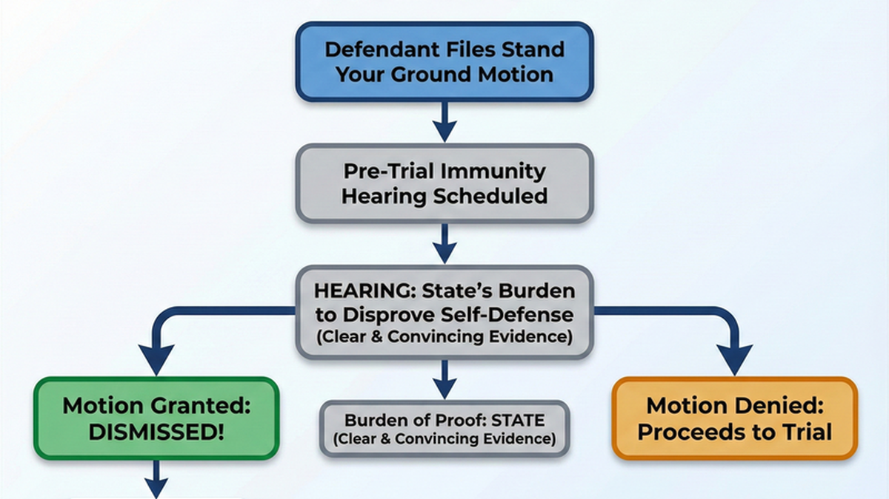

Florida's Stand Your Ground Law: When You Can Legally Defend Yourself
"I was just defending myself." It's one of the most common things I hear from clients charged with assault or battery. In many cases, they're right - but being morally right doesn't automatically mean you won't be arrested. Understanding Florida's Stand Your Ground law can mean the difference between criminal charges and immunity from prosecution.
What Is Stand Your Ground?
Florida's Stand Your Ground law, codified in Florida Statute 776.012, establishes that you have no duty to retreat before using force in self-defense - as long as you're in a place where you have a legal right to be.
This is a significant departure from older common law, which required you to retreat from a threat if it was safe to do so. Under Stand Your Ground, if someone threatens you with violence, you don't have to run away first. You can stand your ground and defend yourself.
The Key Requirements for Stand Your Ground
- You must be in a place where you have a legal right to be
- You must not be engaged in criminal activity at the time
- You must reasonably believe force is necessary to prevent imminent death, great bodily harm, or the commission of a forcible felony
- The force you use must be proportional to the threat
Stand Your Ground vs. Castle Doctrine
Many people confuse Stand Your Ground with the Castle Doctrine, but they're related concepts with different applications:
Castle Doctrine (F.S. 776.013)
Applies when someone unlawfully and forcibly enters your home, vehicle, or occupied structure. You are presumed to have a reasonable fear of death or great bodily harm - meaning the law assumes you were justified without you having to prove it.
Stand Your Ground (F.S. 776.012)
Applies anywhere you have a legal right to be - on the street, in a parking lot, at a bar, at work. You must still prove that you reasonably believed force was necessary, but you have no duty to retreat first.
Bottom line: Castle Doctrine gives you a legal presumption in your home. Stand Your Ground removes the duty to retreat everywhere else.
The Immunity Hearing: Your Best Defense
Here's something many people don't know: Stand Your Ground isn't just a defense you argue at trial. Under Florida Statute 776.032, you can seek immunity from prosecution before your case ever goes to trial.
This is called a Stand Your Ground immunity hearing (sometimes called a "776 hearing"). If you win this hearing, your case doesn't just result in a "not guilty" verdict - the charges are dismissed entirely, and you cannot be prosecuted for the same conduct.
How the Immunity Hearing Works
- Your attorney files a Motion to Dismiss based on Stand Your Ground immunity
- The court holds an evidentiary hearing where the State must prove by clear and convincing evidence that you were NOT acting in lawful self-defense
- If the State fails to meet this burden, the case is dismissed with prejudice
- You are entitled to recover attorney's fees and costs if you prevail
This is a powerful tool. The burden is on the prosecution - they must disprove your self-defense claim by "clear and convincing evidence." This is a higher standard than the typical preponderance standard, though lower than "beyond a reasonable doubt."

When Stand Your Ground Applies to Assault Charges
If you've been charged with assault or battery in Florida, self-defense may be your strongest defense. Here's how it typically applies:
Scenario 1: Bar Fight
You're at a bar. Another patron gets in your face, threatens to "beat your ass," and raises his fist. You punch him first. Can you claim Stand Your Ground?
Possibly yes. If you reasonably believed he was about to strike you, you can use proportional force to defend yourself. You don't have to wait to be hit first. The key questions are: Was his threat imminent? Did you use excessive force? Were you the initial aggressor?
Scenario 2: Road Rage
Someone cuts you off in traffic, then follows you to a parking lot. They get out of their car and approach aggressively. You pull a knife and they back off. Now you're charged with aggravated assault.
Stand Your Ground may apply. You were in a place you had a right to be (a parking lot), and the other driver's aggressive approach created a reasonable fear. However, the prosecution will argue about proportionality and whether you were the one who escalated the situation.
Scenario 3: Mutual Combat
You and another person agreed to fight - "meet me outside" - and now one of you is charged. Stand Your Ground typically does NOT apply to mutual combat. If you voluntarily engaged in the fight, you were not defending yourself from an unprovoked attack.
When Stand Your Ground Does NOT Apply
Stand Your Ground is not a license to use force whenever you feel threatened. It has important limitations:
- You were the initial aggressor: If you started the confrontation, you generally cannot claim self-defense unless you withdrew from the fight and clearly communicated that withdrawal
- You were engaged in criminal activity: If you were committing a crime when the confrontation occurred, Stand Your Ground doesn't protect you
- The threat wasn't imminent: Words alone, without an immediate threat, don't justify force. "I'm going to kill you tomorrow" is not an imminent threat
- You used disproportionate force: If someone shoves you and you respond by shooting them, the force is not proportional to the threat
- The other person was retreating: Once the threat ends, your right to use force ends. You cannot pursue someone who is fleeing
What to Do If You're Arrested After Defending Yourself
Even when you were clearly defending yourself, police may arrest the wrong person. Here's what you should do:
- Exercise your right to remain silent. Don't try to explain what happened to police without an attorney present. Your statements can be used against you.
- Contact a criminal defense attorney immediately. The sooner we can investigate, the better chance we have of gathering evidence that supports your self-defense claim.
- Preserve evidence. If there are witnesses, try to get their contact information. If there's video footage (security cameras, cell phones), make note of it.
- Don't discuss the case on social media. Anything you post can be used against you in court.
Why Law Enforcement Experience Matters
As a former Florida Highway Patrol Trooper and Orange County Deputy Sheriff, I've been on the other side of these cases. I know how officers investigate assault claims, what they look for, and where they make mistakes.
I've seen cases where the actual victim gets arrested because they "won" the fight. I've seen officers fail to properly document evidence of self-defense. And I've seen prosecutors overcharge cases because they only heard one side of the story.
That experience is now your advantage. We analyze body camera footage, interview witnesses the police may have missed, and build a case that shows you were the one defending yourself - not the aggressor.
Charged with Assault After Defending Yourself?
Don't let the wrong story go on your record. If you were defending yourself, you may be entitled to immunity from prosecution. Call now for a free consultation with an Orlando defense attorney who understands both sides of the law.
Related Articles
Assault & Battery Defense
Full overview of assault and battery charges, penalties, and defense strategies in Florida.
BlogDomestic Violence: No Bond & Pretrial Release
What happens after a DV arrest and how to get released from jail.
Need Legal Help?
If you're facing criminal charges in Central Florida, an experienced defense attorney can make the difference. Get a free consultation to discuss your case.
Contact Lotter Law at 407-500-7000 for a free consultation.

Jeff Lotter
Criminal Defense Attorney | Former State Trooper
Jeff Lotter is an Orlando criminal defense attorney and former Florida Highway Patrol trooper. He uses his law enforcement background to build stronger defenses for clients facing criminal charges.